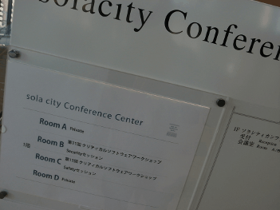

We had “Metasepi team meeting #11” at “11th Workshop of Critical Software Systems(11thWOCS2)”.
At Metasepi team meeting #10, we promoted Metasepi for university researcher. This time, I would like to promote it for corporate researcher. However, people at this workshop mainly discuss pure software-design process, and nobody discuss programming language as us. I think they need method that is ready-to-use on their job site.
But there is also a problem that is solved by us. Because we have only chosen “C language + design method to support the language” as facile solution in the past, software engineer is luckless today. To fix it, we should choose some fitting languages to be good for system programming, as chose C language instead of assembler Also Metasepi project should produce some practical technologies for some real domains, as soon as possible. “It can run on MCU” still isn’t enough to do it.
By the way, many corporate researchers associate Ada with “strongly typed language”. I know we should clearly explain difference between “type” of languages having type inference and of such like Ada.

blog comments powered by